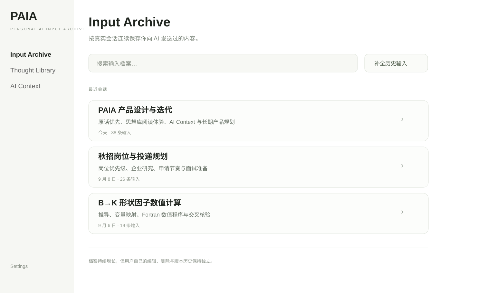
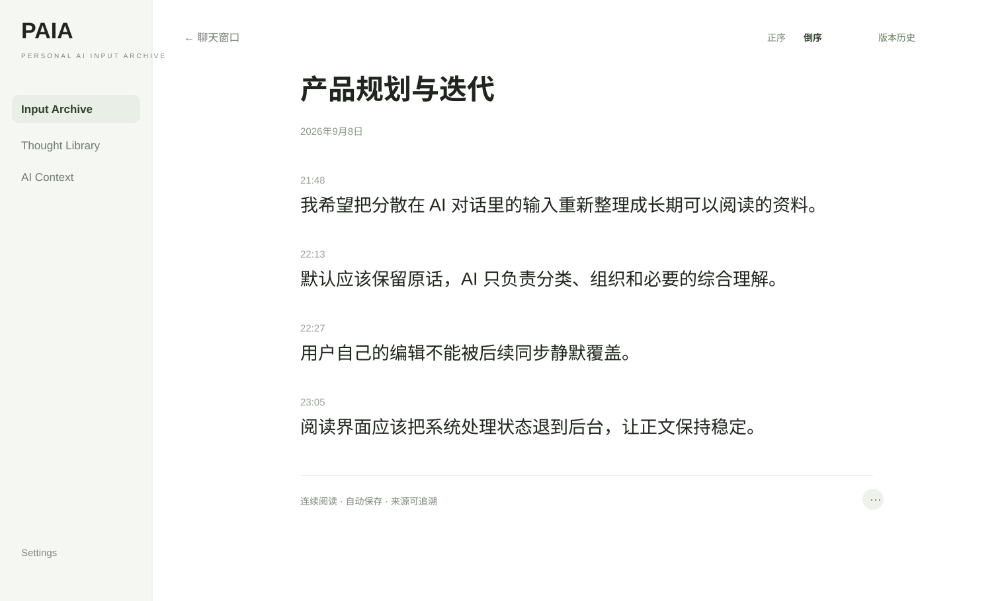
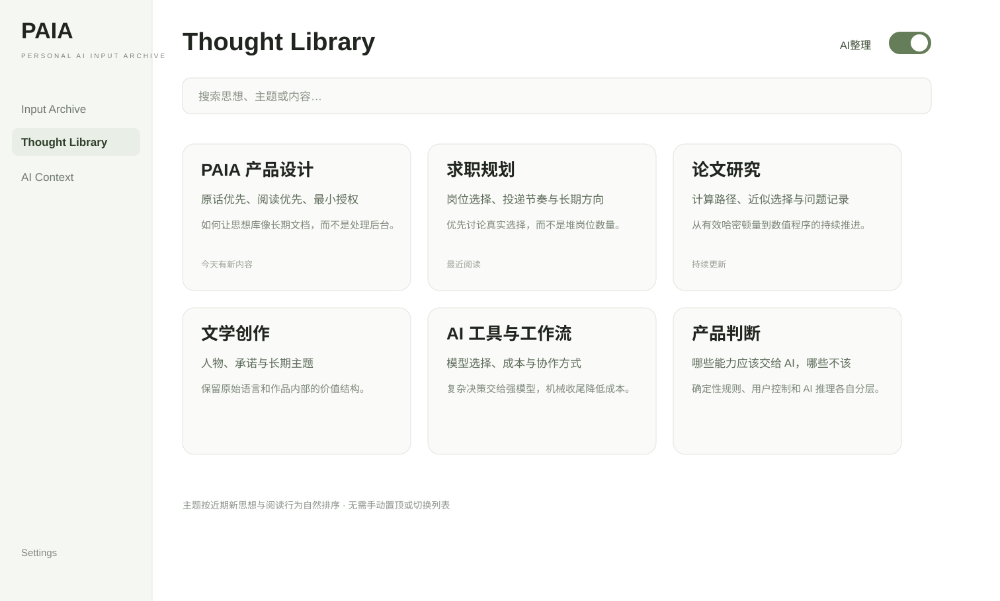
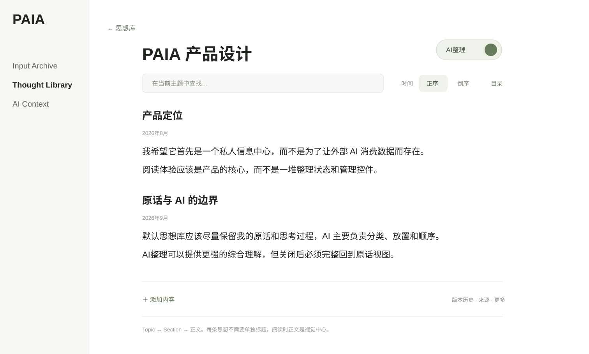
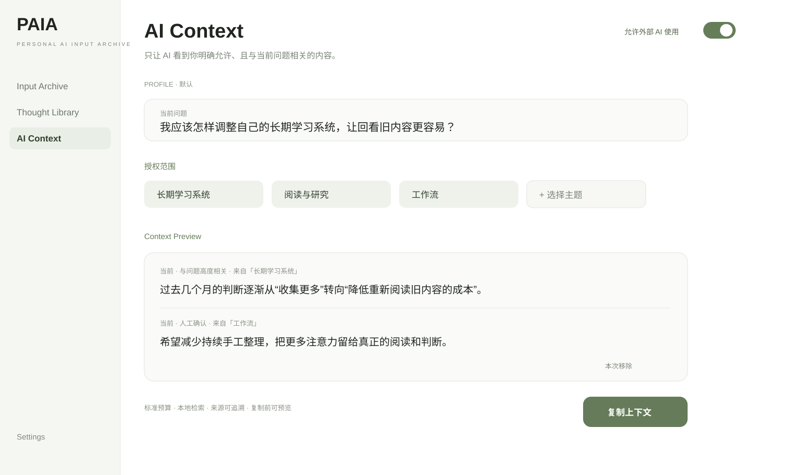

Input Archive
持续归档用户向 AI 发送过的内容，保留来源，同时允许用户重新编辑、搜索和阅读。
保存、整理，并重新阅读你在 AI 中表达过的信息和想法。
从问题开始长期使用 ChatGPT 等 AI 后，事实、判断、偏好、决定和想法会分散在大量聊天窗口里。聊天历史适合继续对话，却并不天然适合重新阅读自己。
PAIA 不试图成为另一个聊天客户端。它把注意力重新放回用户自己的输入：先保存，再组织，最后只在用户明确允许时把必要内容提供给未来 AI。

持续归档用户向 AI 发送过的内容，保留来源，同时允许用户重新编辑、搜索和阅读。
跨聊天窗口按长期主题重新组织内容。默认优先保留原话，也可以切换 AI 整理后的派生视图。
由用户决定哪些思想可以被使用，并在本地检索相关内容，构建最小必要上下文。
Source Record 作为不可变事实层存在于底部，但不占据普通用户的日常阅读界面。
输入按真实会话沉淀为连续档案。用户可以搜索、编辑和回看，但来源事实与用户后续工作保持分离。


Thought Library 不按照聊天窗口组织，而是把跨会话内容聚合为长期 Topic。默认视图尽量忠实于原始表达，AI 整理只作为可切换的派生层。



AI Context 建立在 Thought Library 之上。授权、排除、检索和上下文预算都先在本地完成；真正复制或导出上下文，需要用户明确操作。

当前产品以 Chrome Extension 形式运行，核心数据默认保存在本机。历史补全、检索、备份和多数组织逻辑优先在本地完成。
涉及 AI 的动作采用明确的用户控制与最小数据边界。这个公开展示网站本身不连接 PAIA 数据，也不设置分析脚本或跟踪器。

